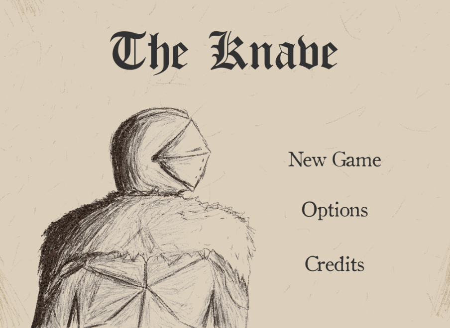
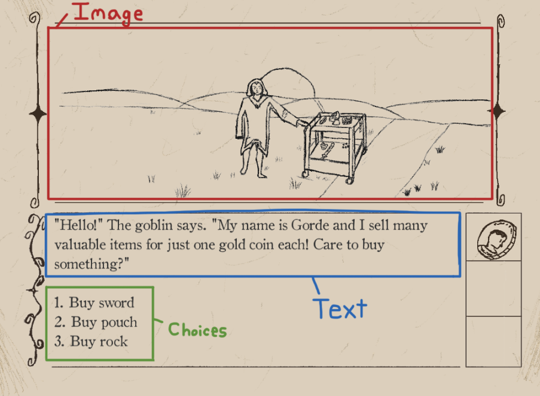

The Knave

Production Details:
- Game Engine: Unity
- Team Size: 1 developer
- Timeline: March 2019 - May 2019
- Platform: WebGL
Tools:
- Compiler: Microsoft Visual Studio 2017
- Sprite creation: Photoshop
About:
The Knave is a text-based adventure game where every choice you make affects the story. The game was made with Unity and a majority of the work was put into scriptable objects. These scriptable objects contained the art, text, and choices for the current slide in the game. There is also an inventory system in the game that keeps track of the items the player has, which also affects which choices are available to the player.
Game Link:
https://www.kongregate.com/games/Jadonut/knaveGameplay:
Highlights:
Unity's scriptable objects
 The main tech used to create the game was Unity's scriptable objects. A "ScriptableObject" is essentially a data container that has only one copy of its memory. These objects are great if you want to reduce memory usage in your game because scriptable objects don't copy data like prefabs do. For the scriptable objects used in The Knave, they contained three main pieces of information: An image, text, and set of choices. The current "scene" of the game would be one scriptable object, which would display its image, text, and choices to the player. After making a choice, the scriptable object would load the next object according to the player's choice.Highlights:
- Use of ScriptableObjects which reduce memory usage when compared to prefabs
- Each ScriptableObject contains an image, text, and player choices
- After a player presses a number, the next ScriptableObject will be loaded